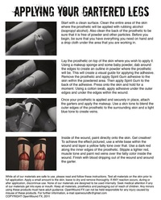
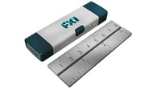
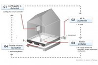
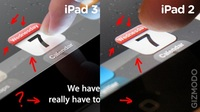
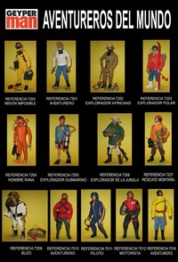
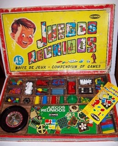

Thu, 01 Mar 2012 11:57:20 GMT
Te presentamos el tablet más potente, el ASUS Eee Pad Transformer Prime [Publirreportaje]
Te presentamos el tablet más potente, el ASUS Eee Pad Transformer Prime [Publirreportaje]
Los tablets están entrando con fuerza en el panorama español y ASUS, el gigante Taiwanés, ha lanzado recientemente el tablet más potente del mercado. Se trata del ASUS Eee Pad Transformer Prime, el primer tablet con el procesador NVIDIA Tegra … Sigue leyendo →
historias relacionadas
Google te paga un millón de dólares… si logras hackear su navegador Chrome
Es oficial: Apple presenta el iPad3 el 7 de marzo
El ordenador más pequeño del mundo que ya puedes comprar mide 8 cms.
No pierdas nada más gracias a la funda inteligente para iPhone BiKN
Sistema japonés de cimientos antiterremotos a base de ¿airbags?
Los tablets están entrando con fuerza en el panorama español y ASUS, el gigante Taiwanés, ha lanzado recientemente el tablet más potente del mercado. Se trata del ASUS Eee Pad Transformer Prime, el primer tablet con el procesador NVIDIA Tegra 3 quad-core. Este tablet también es el primero en incluir Google Android 4.0 Ice Cream Sandwich.
El Transformer Prime ha sido creado pensando en las necesidades de los consumidores por eso, al margen de su extremada ligereza y su reducido tamaño, ofrece también un rendimiento envidiable. Todas estas características junto a su teclado Docking lo convierten en ideal para los más pragmáticos que no se acaban de acostumbrar a escribir utilizando la pantalla táctil.
Multimedia con estilo
El Transformer Prime, que tiene un grosor de solo 8.3mm, es el único tablet metálico con un peso de apenas 586g. Su chasis es acabado en aluminio con un elegante patrón concéntrico que permite sujetarlo con firmeza y seguridad, evitando sustos y caídas. Acompañando este diseño vanguardista encontramos la exclusiva tecnología de audio SonicMaster que ofrece un sonido de alta fidelidad y una pantalla Super IPS+ que mejora el brillo de la pantalla para su uso en exteriores.
Rendimiento Quad-core
El Transformer Prime ofrece la experiencia más rápida disponible para multitarea, navegación web, reproducción de video Full HD y, por supuesto, juegos. Pos si mismo el tablet tiene una autonomía de 12 horas que puede ser ampliada a 18 horas con la ayuda del Dock.
Google Android 4.0 Ice Cream Sandwich para más perfección
La interfaz de la cámara permite compartir contenidos de un modo más simple, un nuevo modo panorámico y efectos en vivo que pueden aplicarse a vídeos. Además también incluye la posibilidad de editar fotografías.
La navegación offline permite que los usuarios graben páginas web y las consulten posteriormente sin necesidad de estar conectados a internet, una funcionalidad ideal para viajeros. Y la función Wi-Fi Direct permite intercambiar archivos entre dispositivos compatibles aunque no haya una conexión disponible
Precisión visual al máximo
La cámara frontal de 1.2MP es ideal para videoconferencias y la posterior de 8MP con autoenfoque y flash permite tomar fotos de gran calidad. Además, por primera vez en una tableta, el Transformer Prime graba videos FULL HD 1080p.
Por último, cabe destacar que ASUS ofrece 8GB de almacenamiento extra vía el servicio ASUS WebStorage.
Todas estas características han hecho que el Transformer Prime haya sido galardonado en la categoría Personal Electronics del CES 2012. Así que si buscas un tablet que te aporte lo mejor del diseño y la mayor potencia el ASUS Transformer Prime es tu mejor elección.

Thu, 01 Mar 2012 11:04:33 GMT
Arrestado cuando vuelve para sacar dinero al banco que intentó robar
Arrestado cuando vuelve para sacar dinero al banco que intentó robar
Ya sabéis que en Gizmodo somos fans de las historias de crímenes absurdos y situaciones policíacas variopintas, como robos perpetrados por elfos navideños o policías que se persiguen a sí mismos, pero nuestro protagonista de hoy no sabemos muy bien si es … Sigue leyendo →
historias relacionadas
Foxconn, ¿hay mejora de verdad o aquí hay gato encerrado?
Represalias de Anonymous tras la detención de 25 supuestos miembros
Condones con código QR para rastrear tu sexualidad
Google estudió lanzar su propia moneda, los Google Bucks (pavos Google)
Kim Dotcom pide 130.000 € al mes para poder vivir [Veredicto: así también me apunto yo al arresto domiciliario]
Ya sabéis que en Gizmodo somos fans de las historias de crímenes absurdos y situaciones policíacas variopintas, como robos perpetrados por elfos navideños o policías que se persiguen a sí mismos, pero nuestro protagonista de hoy no sabemos muy bien si es que lo de robar bancos no se le da bien o es que tuvo un mal día. La historia a continuación es tan rematadamente absurda como real.
El caso es que por una serie de circunstancias no sólo fracasó al intentar hacerse con dinero, sino que en su huida en taxi al final tuvo que volver al mismo banco que intentó robar para sacar dinero para pagar al taxista.
Trevor Gladston Junior, estadounidense de 39 años, llegó con su coche a la estación MARTA de la ciudad de Chamblee, desde allí fue a pie hasta el Wells Fargo Bank donde le pasó a uno de los cajeros esta curiosa nota: “Danos el dinero ahora o empezamos a disparar”.
Claro, no es muy buena idea amenazar con disparar a alguien que está detrás de un cristal blindado sin que parezca que cuentas con un montón de compinches apuntando al resto de clientes.
El caso es que su farol le salió mal y tuvo que salir por patas del banco, volvió a la estación y allí cogió un taxi en vez de su coche, tal vez para que no le reconocieran. Hasta aquí, como diría Íker Jiménez, todo normal.
Pero lo gracioso viene cuando mandó a la taxista a volver a la estación para poder coger dinero de su coche para pagarle. La taxista viendo el probable simpa bloqueó su coche con el taxi y un policía en la zona acudió al ver el percal.
El colmo es que el policía, sin saber que había intentado robar un banco, le dijo a Trevor que fuera al banco más cercano a sacar dinero para pagar, que curiosamente era el mismo del que huyó.
El resto de la situación os la podéis imaginar. Y es que aunque en las pelis queden fantásticos los faroles que siempre parecen funcionar, en el mundo real no hay manera de volver a repetir una toma. [AJC]
Wed, 29 Feb 2012 19:11:12 GMT
Medias zombis para chicas que están de muerte
Medias zombis para chicas que están de muerte
Esas piernas están para comérselas. Es lo que piensa esta chica zombie de tus rollizos muslos, no te creas. Los zombis no es que hayan vuelto, es que nunca se fueron, no estaban muertos sino mal enterrados y a poco … Sigue leyendo →
historias relacionadas
Soporte práctico para auricular discutible a la par que viejuno
Outline te hace fácil el momento plancha
El mundo está en llamas y ahora puedes tenerlo en tu jardín y hacer una barbacoa con él
Con albatros siempre sabrás por donde seguir tus libros
Etiquetas Mark Brothers para cables bien organizados
Esas piernas están para comérselas. Es lo que piensa esta chica zombie de tus rollizos muslos, no te creas. Los zombis no es que hayan vuelto, es que nunca se fueron, no estaban muertos sino mal enterrados y a poco que estrenan alguna serie como “The walking dead” se renueva la moda de la gente sin vida ansiosa de tripas. No os digo más que el hueco que deja la saga “Crepúsculo” se va a llenar con una nueva saga de novelas y películas para adolescentes en que el prota es un muerto viviente del que se enamora la chica. Lo normal. Pero para que ellas también nos enamoren incluso después de muertas nada como unas piernas atractivas incluso si el liguero en lugar de a las medias se engancha a la propia carne.
Rutilizables y lavables estos ligueros zombies te convertirán en el cadáver más sexy del cementerio.
Eso sí, necesitarás cierta habilidad con el pincel y las pinturas ya que estamos hablando de un elemento prostético propio de efectos especiales que viene sin pintar para que lo adecues a tu propio tono de piel y para que lo completes con el nivel de sangre y descarnamiento deseado.
Lo bueno de haber pasado a mejor peor vida es que algunos elementos de lencería que cuando estabas viva te daban un dolor de cabeza si se enganchaban en algún sitio provocando una carrera ahora… pues como que da igual. De hecho casi mola más el torpe desaliño indumentario machadiano.

Si en “La bola de cristal” Alaska cantaba aquello de “Mi novio es un zombi” ahora podrás enseñar orgulloso la foto de tu novia cadáver mientras presumes de sus atractivas piernas, aunque el liguero haya medio arrancado parte de la piel del muslamen. Este cementerio nunca ha sido serio. ─[Open Wound FX]
Wed, 29 Feb 2012 17:21:39 GMT
Etiquetas Mark Brothers para cables bien organizados
Etiquetas Mark Brothers para cables bien organizados
Una nueva y simpática solución para esos cables que tienes por detrás del ordenador que parece aquello la selva africana y no extrañaría nada empezar a oír gritos a lo Tarzán. Convierte tus cables en trasuntos digitales de las lianas … Sigue leyendo →
historias relacionadas
Soporte práctico para auricular discutible a la par que viejuno
Outline te hace fácil el momento plancha
El mundo está en llamas y ahora puedes tenerlo en tu jardín y hacer una barbacoa con él
Con albatros siempre sabrás por donde seguir tus libros
Medias zombis para chicas que están de muerte
Una nueva y simpática solución para esos cables que tienes por detrás del ordenador que parece aquello la selva africana y no extrañaría nada empezar a oír gritos a lo Tarzán. Convierte tus cables en trasuntos digitales de las lianas del hijo de la jungla mientras además te sirve para identificar a qué dispositivo corresponde cada uno de ellos mediante una etiqueta personalizada. Angawa, Chita.
Ha llegado ese temible día en que de repente el portátil de dice que le queda un 1% de batería mientras está realizando la copia de seguridad de ese documento en el que llevas trabajando toda la tarde.
Corres a contrarreloj tratando de identificar el cable que puedes desconectar de la regleta sin interrumpir la conexión del ordenador de sobremesa, el disco duro externo o el radiador (no está la cosa para pasar frío). Y esto no es como las películas, aquí no sirve lo de “corta el cable rojo” porque son todos iguales.
Sigues el recorrido de los cables que quizá puedas desenchufar sin mayores consecuencias pero te pierdes en esa maraña gordiana. Todo esto te lo ahorrarás con los etiquetadores de cables Mark Brothers, pequeñas piezas de plástico que simulan una figura humana abrazada al cable con un desproporcionado cabezón que sirve para que escribas en la etiqueta que portan el nombre del dispositivo al que proporciona energía el cable al que lo sujetes. Se acabó el anonimato cableril.
No es el primero de estos identificadores pero sí es uno de los más divertidos, al parecer pequeños acróbatas, funambulistas o tarzanetes a los que además de pintarrajearles la cara con el nombre del dispositivo les puedes dibujar pequeñas caritas que expresen el estado de ánimo.
Son ese pequeño gasto ($16 el pack de 5) del que no te acuerdas el día que miras detrás del mueble para buscar un cable y que te proporciona una sonrisa en un momento de agobio electrónico. ─[Animi Causa]
Wed, 29 Feb 2012 16:33:26 GMT
Condones con código QR para rastrear tu sexualidad
Condones con código QR para rastrear tu sexualidad
¿Para qué quieres ponerle a un condón un código QR? Pues para poder marcarlo y luego con una aplicación registrar el momento y posición de su uso. ¿Para qué quieres hacer eso? Ahí sí que no lo tengo tan claro, … Sigue leyendo →
historias relacionadas
Foxconn, ¿hay mejora de verdad o aquí hay gato encerrado?
Represalias de Anonymous tras la detención de 25 supuestos miembros
Google estudió lanzar su propia moneda, los Google Bucks (pavos Google)
Kim Dotcom pide 130.000 € al mes para poder vivir [Veredicto: así también me apunto yo al arresto domiciliario]
Arrestado cuando vuelve para sacar dinero al banco que intentó robar
¿Para qué quieres ponerle a un condón un código QR? Pues para poder marcarlo y luego con una aplicación registrar el momento y posición de su uso. ¿Para qué quieres hacer eso? Ahí sí que no lo tengo tan claro, pero al parecer según Planned Parenthood of the Great Northwest es una buena idea, tanto como distribuir 50.000 condones QR y crear la página WhereDidYouWearIt.
No tengo yo muy claro que ayude mucho a animar a la gente a usar preservativos el hecho de que haya gente que justo antes de ponérselo, o tal vez después, tenga la suficiente paciencia como para sacárselo, el móvil, y escanear el código QR para luego ir a una página en la que dar datos de la experiencia de manera anónima.
Pero quitando lo absurdo que puede llegar a sonar, es realmente curioso como a pesar de que los condones se distribuyeron por Washington, ha habido registros provenientes no sólo de todo EEUU, sino también de todo el mundo, lo que demuestra la gran movilidad condonil.
Un método que no sé si será muy efectivo a la hora de acostumbrar a la gente a ponerse el chubasquero, pero en estos momentos de falta de privacidad personal ya puestos deberían hacer fotos, vídeo, ratings, momentos estelares, jugador del partido… [WhereDidYouWearIt]
Wed, 29 Feb 2012 16:04:25 GMT
Acribilla a tus amigos, enemigos y quien quieras con Apptag
Acribilla a tus amigos, enemigos y quien quieras con Apptag
No es la primera vez que alguien desarrolla un sistema de juego FPS en realidad aumentada, pero hay que reconocer que AppTag es uno de los mejores que he visto hasta ahora. Se basa en una aplicación y un dispositivo … Sigue leyendo →
historias relacionadas
Android + Ubuntu: vaya pareja
HTC apuesta fuerte con su gama de smartphones Android One
Un extrabajador de McAfee muestra que cualquier smartphone actual puede ser chuleado
Murió el inventor de Geyperman y de los Juegos Reunidos
Supermarioliza tu vida con la lámpara 8BitLit
No es la primera vez que alguien desarrolla un sistema de juego FPS en realidad aumentada, pero hay que reconocer que AppTag es uno de los mejores que he visto hasta ahora. Se basa en una aplicación y un dispositivo especial que permite sujetar cualquier smartphone y comunicarse con él para utilizarlo como puente entre el mundo real y el virtual, haciendo de tu entorno tu propio FPS en el que los enemigos son otros usuarios.
Pinche aquí para ver el vídeo
AppTag no sólo cuenta con su propia pistola, sino que además es compatible con otros tipos de pistolas y armas de juguete Nerf y similares, usando los enganches de las mismas.
El dispositivo en sí cuenta con sensor y emisor de IR, además de 6 botones: uno grande superior de recarga, 4 laterales para diferentes funciones en los juegos y uno sensible a la presión adaptable a cualquier gatillo.
Lo más curioso es que para comunicarse con el smartphone no utiliza un puerto sino sonidos de alta frecuencia, lo que permite usarlo sin problemas ni follones de compatibilidad o posiciones de ranuras en cualquiera.
Además no molesta a las personas ni animales, permitiendo usar simultáneamente el micro propio del teléfono para comunicaciones en medio del juego o simplemente para llamar normalmente.
Viene, además de con varios juegos, con un kit de desarrollo que permitirá que puedas hacer de la realidad tu propio juego y puedas compartirlo con todos los usuarios del sistema.
Se trata de un proyecto Kickstarter que a juzgar por como va su recaudación, muy probablemente consiga hacerse realidad. Según lo que indican empezarán a distribuirse en junio de este año y cada AppTag estará de manera limitada por 35 dólares. Además cuenta con sistemas para 256 jugadores simultáneos o incluso miles en caso de montarte la Tercera Guerra Mundial. [Kickstarter]
Wed, 29 Feb 2012 14:09:25 GMT
Represalias de Anonymous tras la detención de 25 supuestos miembros
Represalias de Anonymous tras la detención de 25 supuestos miembros
Como cabía de esperar, tras tantos ataques y filtraciones, al final varios supuestos miembros de Anonymous han terminado siendo detenidos por la Interpol. Las detenciones de la llamada operación Exposure se han realizado en varias ciudades de Europa y América … Sigue leyendo →
historias relacionadas
Foxconn, ¿hay mejora de verdad o aquí hay gato encerrado?
Condones con código QR para rastrear tu sexualidad
Google estudió lanzar su propia moneda, los Google Bucks (pavos Google)
Kim Dotcom pide 130.000 € al mes para poder vivir [Veredicto: así también me apunto yo al arresto domiciliario]
Arrestado cuando vuelve para sacar dinero al banco que intentó robar
Como cabía de esperar, tras tantos ataques y filtraciones, al final varios supuestos miembros de Anonymous han terminado siendo detenidos por la Interpol. Las detenciones de la llamada operación Exposure se han realizado en varias ciudades de Europa y América Latina, siendo en total 25 las personas implicadas. Pero claro, la respuesta por parte de los miembros de la careta no ha tardado y la página web de la Interpol ha sufrido su particular ataque estando offline durante un tiempo.
Entre los 25 detenidos se encuentran 10 en Argentina, 6 en Chile, 5 en Colombia y 4 en España, siendo uno de los españoles un menor de 16 años. Uno de los arrestados también en España es el supuesto encargado de gestionar Anonymous en España e Iberoamérica, Pacotron, mientras que otro de ellos, Troy, habría sido el encargado de varias filtraciones.
En estas filtraciones se incluyen las relacionadas con los datos personales de escoltas de Zapatero, de la casa real y de miembros de los GEOs.
Veremos por tanto en que se queda esta llamada “justicia igualitaria para todos” para los detenidos, mientras Urdangarín y la infanta tras choricear sin reparos viven en libertad y pueden viajar fuera de España esponsorizados como no por nuestros impuestos. [RT]
Wed, 29 Feb 2012 12:19:08 GMT
No pierdas nada más gracias a la funda inteligente para iPhone BiKN
No pierdas nada más gracias a la funda inteligente para iPhone BiKN
Por fin el esperado sistema de localización por radio BiKN para iPhone está a la venta. Se trata de una tecnología que combina una funda inteligente, una aplicación y etiquetas electrónicas que te permiten poder encontrar con facilidad cualquier tipo de … Sigue leyendo →
historias relacionadas
Te presentamos el tablet más potente, el ASUS Eee Pad Transformer Prime [Publirreportaje]
Google te paga un millón de dólares… si logras hackear su navegador Chrome
Es oficial: Apple presenta el iPad3 el 7 de marzo
El ordenador más pequeño del mundo que ya puedes comprar mide 8 cms.
Sistema japonés de cimientos antiterremotos a base de ¿airbags?
Por fin el esperado sistema de localización por radio BiKN para iPhone está a la venta. Se trata de una tecnología que combina una funda inteligente, una aplicación y etiquetas electrónicas que te permiten poder encontrar con facilidad cualquier tipo de objetos y hasta el propio móvil sin tener que volverte loco, de una manera muy parecida al Loc8tor Plus.
Pinche aquí para ver el vídeo
Básicamente se trata de un sistema que utiliza señales de radio 802.15.4 para conectar inalámbricamente tu móvil a unas etiquetas que puedes colocar en objetos, personas, mascotas o lo que quieras.
De esta manera y gracias a tres funciones específicas nunca volverás a perder nada. Por un lado está Find, que básicamente sirve para, usando la aplicación del móvil, encontrar una etiqueta con señales de audio y visuales que te mostrarán la cercanía de la misma.
Luego tenemos Leash, que crea una “correa virtual” en la que defines una distancia máxima y si la etiqueta se aleja más, saltará una alarma en el móvil avisándote, o puedes hacer lo mismo con el móvil y que una etiqueta te avise.
Por último, gracias a Page y a que todas las etiquetas y la funda cuentan con un altavoz y un botón, podrás hacer que la alarma suene en las etiquetas y encontrar el iPhone pulsando el botón de la etiqueta o utilizarlo como sistema de alarma para que tus familiares te avisen cuando tienen problemas o se pierden.
Las etiquetas se recargan por USB, y la funda tiene su propia batería, el alcance es de 30 metros en interiores o más de 150 en exteriores. Por ahora puede usar 8 etiquetas pero una actualización de la aplicación permitirá 254.
El pack con la funda, aplicación y 2 etiquetas te costará 120 dólares, el juego de 2 etiquetas 50 dólares, y para que no las confundas, las etiquetas están disponibles en todo tipo de colores. [BiKN]
Tue, 28 Feb 2012 23:16:24 GMT
El ordenador más pequeño del mundo que ya puedes comprar mide 8 cms.
El ordenador más pequeño del mundo que ya puedes comprar mide 8 cms.
Este ordenador se te puede perder entre los cojines del sofá o en el fondo del bolso. Del tamaño aproximado de un pendrive USB pero con un procesador de doble núcleo. Ya puedes reservar el tuyo porque la producción de … Sigue leyendo →
historias relacionadas
Te presentamos el tablet más potente, el ASUS Eee Pad Transformer Prime [Publirreportaje]
Google te paga un millón de dólares… si logras hackear su navegador Chrome
Es oficial: Apple presenta el iPad3 el 7 de marzo
No pierdas nada más gracias a la funda inteligente para iPhone BiKN
Sistema japonés de cimientos antiterremotos a base de ¿airbags?

Este ordenador se te puede perder entre los cojines del sofá o en el fondo del bolso. Del tamaño aproximado de un pendrive USB pero con un procesador de doble núcleo. Ya puedes reservar el tuyo porque la producción de este FXI Cotton Candy está a punto de comenzar.
Apúntate las características y no pierdas de vista la fotografía sobre estas líneas.
Aunque no te lo parezca y pienses que estamos hablando de un dispositivo de tamaño normal todo esto que vamos a relacionar a continuación está dentro de ese pequeño trozo de plástico que casi podría confundirse con un encendedor.
Procesador ARM Cortex A9 a 1 GHz obra de Samsung, conexión WiFi y puerto MicroUSB para un dispositivo que como SO puede venir con Android o Ubuntu. Es capaz de manejar archivos de vídeo en formatos MPEG-4 y H.264 con lo que puedes conectarlo directamente en un televisor y usarlo como el más diminuto de los HTPC.
La fecha estimada de llegada a sus compradores es en este mes de marzo por un precio en torno a 150€.─[FXI]
Tue, 28 Feb 2012 18:19:52 GMT
Google te paga un millón de dólares… si logras hackear su navegador Chrome
Google te paga un millón de dólares… si logras hackear su navegador Chrome
El desafío internacional Pwn2Own presenta el reto de hackear un programa y quien lo consigue se alza con un premio de un millón de dólares. En ediciones anteriores Internet Explorer, Safari y Mozilla han caído víctima de los participantes. Por … Sigue leyendo →
historias relacionadas
Es oficial: Apple presenta el iPad3 el 7 de marzo
El ordenador más pequeño del mundo que ya puedes comprar mide 8 cms.
No pierdas nada más gracias a la funda inteligente para iPhone BiKN
Google estudió lanzar su propia moneda, los Google Bucks (pavos Google)
Sistema japonés de cimientos antiterremotos a base de ¿airbags?
El desafío internacional Pwn2Own presenta el reto de hackear un programa y quien lo consigue se alza con un premio de un millón de dólares. En ediciones anteriores Internet Explorer, Safari y Mozilla han caído víctima de los participantes. Por su parte Chrome, el navegador de Google, ha permanecido tres años invicto y vuelve a retar a quien se crea capaz de vulnerar su seguridad.
El premio de un millón de dólares no es simplemente por hackear Chrome sino por que aquel que lo consiga (si lo consigue alguien, que ya estamos aventurando mucho) elabore un detallado informe en el que especifique cómo ha sido capaz de conseguirlo.
Evidentemente es una suculenta propuesta pero es que además permitirá que el navegador web sea aún más seguro e inexpugnable en sucesivas versiones. Según ha explicado Chris Evans (nada que ver con el actor de “El Capitán América”), ingeniero de seguridad de Chrome, “no solo es que podremos solucionar pequeños defectos sino que estudiando las posibles vulnerabilidades podremos mitigarlas y realizar ensayos para mejorarlo”.
La semana que viene en la conferencia de seguridad CanSecWest en Vancouver conoceremos si finalmente el desafío ha sido superado. ─[Forbes]
Tue, 28 Feb 2012 16:07:26 GMT
El mundo está en llamas y ahora puedes tenerlo en tu jardín y hacer una barbacoa con él
El mundo está en llamas y ahora puedes tenerlo en tu jardín y hacer una barbacoa con él
Ahora vas a saber lo que es sentirse como el más malo de los malos de las pelis de James Bond. ¿Tener el mundo en tus manos? Eso es de principiantes. Los malos de verdad lo que quieren es pegarle … Sigue leyendo →
historias relacionadas
Soporte práctico para auricular discutible a la par que viejuno
Outline te hace fácil el momento plancha
Con albatros siempre sabrás por donde seguir tus libros
Etiquetas Mark Brothers para cables bien organizados
Medias zombis para chicas que están de muerte
Ahora vas a saber lo que es sentirse como el más malo de los malos de las pelis de James Bond. ¿Tener el mundo en tus manos? Eso es de principiantes. Los malos de verdad lo que quieren es pegarle fuego al mundo. Y tú sabrás lo que es esa sensación con Third Rock Fire Pit, la Hoguera Tercer Guijarro, que hace referencia a la posición de la Tierra en el Sistema Solar y que no es más que una esfera terrestre en el que a través de la silueta de los continentes sale el fuego que arde en su interior.
Si recuerdas las clases de Ciencias Naturales, en el interior de nuestro planeta late un núcleo ardiente. Lo que nunca sospechaste es que ese fuego pudiera llegar a salir en forma de llamas a través de los territorios emergidos de los océanos.
Es lo que sucede en esta estufa realizada artesanalmente a mano y que recrea nuestro pequeño planeta con la peculiaridad de que en su interior puedes colocar carbón o leña, prenderle fuego y calentarte o simplemente quedarte embobado mirando las llamas, algo que sin duda es un vestigio primigenio del primer hombre que consiguió hacer fuego y quedó maravillado con esas lenguas naranjas que oscilan en la oscuridad.
El autor es Rick Wittrig y cada una de estas estufas se realiza bajo pedido añadiendo una placa con su numeración identificativa dentro de la serie limitada. En el interior está acabado con pintura termoresistente y en el exterior con óxido ferroso para otorgarle ese aspecto “enrobinao” tan rústico y molón que además no necesita mantenimiento.
La hooguera Tercer Guijarro pesa unos 140 kilos y cuesta algo más de 1.000€ pero ¡es el precio por ver arder el mundo! ¿Nerón? Aficionado, él tuvo que conformarse con Roma. ─[Fire Pit Art]
Mon, 27 Feb 2012 22:44:34 GMT
Se acabaron los móviles gratis con Telefónica
Se acabaron los móviles gratis con Telefónica
Móviles a cascoporro, terminales por la patilla como si no hubiera un mañana… pues todo eso se ha terminado, al menos con Movistar. Hasta en esto causa estragos la crisis. A partir del 1 de marzo los terminales de alta … Sigue leyendo →
historias relacionadas
Patentadas las órdenes vocales para GoogleTV
La bombilla LED de toda la vida
Mozilla y Telefónica unen fuerzas para desarrollar un nuevo SO para móviles
Ojalá fuera este el escritorio tridimensional del futuro más cercano
Móviles a cascoporro, terminales por la patilla como si no hubiera un mañana… pues todo eso se ha terminado, al menos con Movistar. Hasta en esto causa estragos la crisis. A partir del 1 de marzo los terminales de alta gama tan deseados por los nuevos clientes del operador y que hasta ahora se regalaban tendrán que pagarse (de golpe o a plazos) al mismo precio que paga por los dispositivos el operador. Las subvenciones para clientes recién llegados han pasado a la Historia.
Aunque la competencia lleva tiempo mareando la perdiz con esta misma medida, ha sido Telefónica la primera en soltar la liebre con esta medida que pretendía cazar clientes de otros operadores. Y ya está bien de comparaciones cinegéticas.
Cada año los operadores telefónicos emplean 1.300 millones de euros, una cuarta parte de sus costes, en subvencionar terminales con los que atraer a la nueva clientela. Desde el 1 de marzo los terminales más deseados tendrán un coste que se trasladará al cliente que los desee y que si superan los 400 € se podrán pagar de manera aplazada incluyéndose en la factura mensual desde un mínimo de 10 € y 18 meses.
De manera añadida en esta financiación que se llevará a cabo mediante préstamos de LaCaixa (uno de los accionistas de Telefónica) se añadirá el valor de recompra de dichos terminales puesto que se podrá emplear el móvil “viejo” como parte del pago de uno nuevo. Al parecer Telefónica abrirá también un mercado de móviles de segunda mano para sus clientes de Europa, Asia y Latinoamérica. ─[El Mundo]
Mon, 27 Feb 2012 18:40:13 GMT
Mozilla y Telefónica unen fuerzas para desarrollar un nuevo SO para móviles
Mozilla y Telefónica unen fuerzas para desarrollar un nuevo SO para móviles
En el marco del MWC, el Congreso Mundial de Telefonía Móvil que se está celebrando esta semana en Barcelona, la compañía española Telefónica y Mozilla han anunciado que a partir de este mismo año podremos ver una plataforma OpenWeb basada … Sigue leyendo →
historias relacionadas
Más de la MWC 2012: Un Galaxy Note de 10.1”
La bombilla LED de toda la vida
El MWC 2012 ya está aquí
Se acabaron los móviles gratis con Telefónica
Ojalá fuera este el escritorio tridimensional del futuro más cercano
En el marco del MWC, el Congreso Mundial de Telefonía Móvil que se está celebrando esta semana en Barcelona, la compañía española Telefónica y Mozilla han anunciado que a partir de este mismo año podremos ver una plataforma OpenWeb basada en HTML5 capaz de acceder a las funciones de los móviles para servir como sistema operativo ejecutado a través del navegador Firefox.
Desde el pasado año se rumoreaba que en Mozilla andaban tras un SO para móviles basado en Android.
Aprovechando que el MWC pasa por Barcelona han anunciado conjuntamente con Telefónica su colaboración en una plataforma basada en HTML que pueda proporcionar el mismo nivel de operatividad que un sistema operativo como los que ya conocemos. La idea es demostrar que mediante diversas API el lenguaje HTML es capaz de acceder a las funcionalidades del móvil (contactos, agenda, llamadas, mensajes, juegos…) de manera más eficaz.
Todo esto surge del Boot to Gecko Project (proyecto arranca con gecko), cuya esencia es eliminar el “software intermediario” entre el dispositivo y las aplicaciones que hacen uso de sus funciones, aligerando así el proceso de funcionamiento, prescindiendo de software innecesario y superfluo y consiguiendo un funcionamiento mucho más veloz del dispositivo.
En cuanto al hardware Telefónica anuncia que está trabajando con la base de Qualcomm consiguiendo así un coste 10 veces inferior al iPhone.
La intención de Telefónica es convertir este proyecto en una plataforma que pueda adoptar ampliamente la industria de la telefonía y los dispositivos móviles, según han expresado en la rueda de prensa conjunta Carlos Domingo, director de Desarrollo de Productos e Innovación de Telefónica Digital y Brendan Eich, director de Tecnologías de la Información de Mozilla. ─[Telefónica]
Thu, 01 Mar 2012 11:37:15 GMT
Sistema japonés de cimientos antiterremotos a base de ¿airbags?
Sistema japonés de cimientos antiterremotos a base de ¿airbags?
Los terremotos son, tristemente, algo normal en Japón y como hemos visto tienen consecuencias catastróficas. Un nuevo y revolucionario sistema para proteger tanto los edificios como a sus habitantes ha sido desarrollado en Japón por la empresa Air Danshin Systems … Sigue leyendo →
historias relacionadas
Te presentamos el tablet más potente, el ASUS Eee Pad Transformer Prime [Publirreportaje]
Google te paga un millón de dólares… si logras hackear su navegador Chrome
Es oficial: Apple presenta el iPad3 el 7 de marzo
El ordenador más pequeño del mundo que ya puedes comprar mide 8 cms.
No pierdas nada más gracias a la funda inteligente para iPhone BiKN

Los terremotos son, tristemente, algo normal en Japón y como hemos visto tienen consecuencias catastróficas. Un nuevo y revolucionario sistema para proteger tanto los edificios como a sus habitantes ha sido desarrollado en Japón por la empresa Air Danshin Systems Inc. Como podréis deducir del nombre, se basa en el empleo del aire, en concreto unas bolsas gigantes a lo airbags en los cimientos que hacen “flotar” el edificio. Aquí tenéis el vídeo demostrativo.
Pinche aquí para ver el vídeo
El sistema cuenta con un sensor que es capaz de detectar los movimientos sísmicos y, por tanto, notar un terremoto instantes previos a que se produzca. Esto es tiempo suficiente como para activar un compresor que llena rápidamente de aire unas bolsas gigantes situadas bajo el edificio y que lo elevan unos 3 centímetros.
Esto consigue crear un efecto flotador que aísla del movimiento de los cimientos y consigue que aunque el terreno se mueva más que Epi cosquillas con pilas de plutonio, el edificio y todo en su interior apenas lo perciba.
Por ahora el sistema está siendo implantado en 88 casas a lo largo de todo Japón y se van a plantear usarlo en edificios más grandes. Probablemente si lo combinan con los cimientos flotadores, un montón de globos a lo Up!, un recubrimiento de papel de aluminio y verja electrificada sería el sistema definitivo para sobrevivir sin temor a desastres varios como profecías mayas, conspiraciones del gobierno y apocalipsis zombie. [Inhabitat]
Wed, 29 Feb 2012 22:56:44 GMT
Hoy os vamos a enseñar a manejar un Boing 737
Hoy os vamos a enseñar a manejar un Boing 737
Es de esas cosas contradictorias que tiene la vida. Por un lado te encantaría ser el que se levanta en medio de la cabina entre las miradas de admiración del pasaje (especialmente las integrantes de la selección sueca de voley-playa) … Sigue leyendo →
historias relacionadas
Las estrellas de Hollywood descienden esquiando las colinas de Beverly Hills con este simulador
Telescopios de Realidad Aumentada para la observación de aviones
Ford quiere convertir a todos los europeos en Michael Knight con Sync
Es de esas cosas contradictorias que tiene la vida. Por un lado te encantaría ser el que se levanta en medio de la cabina entre las miradas de admiración del pasaje (especialmente las integrantes de la selección sueca de voley-playa) cuando la azafata pregunta “¿alguien sabe pilotar un Boing?“. Pero claro, por otro lado casi mejor que no se dé el caso en el que tengas que demostrar esas habilidades. Por si acaso permanece atento al vídeo que te mostramos a continuación porque podrás aprender paso a paso a conducir pilotar un Boing 737.
Pranas Dulis es el profesor de la Academia Báltica de Aviación que en este vídeo que puedes ver aquí te enseña a hacer lo mismo que esos señores que cobran millonadas y paralizan el tráfico aéreo de tanto en cuanto. No, no nos referimos a los controladores aéreos sino a los pilotos de avión.
¿Recuerdas cuando en las películas el chico salva el día sentándose en el asiento del comandante y tirando de cuatro palancas mientras por la radio le van dando instrucciones? Todo mentira. Como puedes ver en este otro vídeo la tarea es todo menos sencilla. Por no mencionar el temita de que estás metido dentro de un gigantesco tubo metálico que pesa toneladas mientras surca el aire sin ninguna cuerda que lo sujete de ningún sitio.
Los dos vídeos nos guiarán con todo detalle de todos los pasos necesarios para que manejemos el avión desde el finger hasta el aire. Comprobarás que no es precisamente sencillo. Después de esto esperemos que se te hayan quitado las ideas de pedirle al comandante que te deje dar una vuelta la próxima vez que vueles. ─[Baltic Aviation Academy vía Flight Global]
Wed, 29 Feb 2012 17:51:33 GMT
Ojalá fuera este el escritorio tridimensional del futuro más cercano
Ojalá fuera este el escritorio tridimensional del futuro más cercano
Los ordenadores son cada vez más rápidos, cada vez más pequeños y los sistemas operativos cada vez funcionan mejor… sí, en serio. Pero en lo que no parece avanzar tanto la cosa es en la interacción hombre máquina. Se inventó … Sigue leyendo →
historias relacionadas
Patentadas las órdenes vocales para GoogleTV
Las estrellas de Hollywood descienden esquiando las colinas de Beverly Hills con este simulador
La bombilla LED de toda la vida
Mozilla y Telefónica unen fuerzas para desarrollar un nuevo SO para móviles
Se acabaron los móviles gratis con Telefónica
Los ordenadores son cada vez más rápidos, cada vez más pequeños y los sistemas operativos cada vez funcionan mejor… sí, en serio. Pero en lo que no parece avanzar tanto la cosa es en la interacción hombre máquina. Se inventó el ratón, lo hemos tenido varias décadas aquí al ladico del teclado al pobre sin pedir queso ni nada, apenas empezamos a complementarlo y/o sustituirlo con los touchpads y pantalla táctiles pero en esencia seguimos empleando un escritorio bidimensional. ¿No va siendo ya hora de que llegue aquí también la fiebre 3D? A continuación te mostramos un vídeo de un prototipo de escritorio holográfico.
Por mucho avance informático que tengamos sobre la mesa, seguimos moviendo objetos a lo largo y ancho de una superficie plana de dos dimensiones, la pantalla.
Jinha Lee y Cati Boulanger han pensado en un entorno tridimensional en el que las imagenes de los objetos con los que trabajamos (carpetas, documentos…) ocupen un espacio virtual con profundidad activa. Mediante el uso de una pantalla especial OLED transparente de Samsung y una serie de sensores, además por supuesto de un software especial, los movimientos de las manos se detectan y se ponen en contexto con los “objetos” que manejamos y que podemos ver a través de dicha pantalla.
Aquí tienes el vídeo en el que puedes ver cómo funciona este sistema.
Los sensores además detectan la posición de la cabeza por lo que aunque modifiques la posición relativa de la misma con respecto de la pantalla el efecto seguirá produciéndose. ─[Cargo Collective]
Wed, 29 Feb 2012 17:06:13 GMT
Kim Dotcom pide 130.000 € al mes para poder vivir [Veredicto: así también me apunto yo al arresto domiciliario]
Kim Dotcom pide 130.000 € al mes para poder vivir [Veredicto: así también me apunto yo al arresto domiciliario]
La felicidad está hecha de pequeñas cosas. Una pequeña mansión, una pequeña fortuna, una pequeña asignación mensual de 130.000 €… lo normal para ir tirando. O al menos eso parece que es lo normal para alguien como Kim Dotcom, que … Sigue leyendo →
historias relacionadas
Foxconn, ¿hay mejora de verdad o aquí hay gato encerrado?
Represalias de Anonymous tras la detención de 25 supuestos miembros
Condones con código QR para rastrear tu sexualidad
Google estudió lanzar su propia moneda, los Google Bucks (pavos Google)
Arrestado cuando vuelve para sacar dinero al banco que intentó robar
La felicidad está hecha de pequeñas cosas. Una pequeña mansión, una pequeña fortuna, una pequeña asignación mensual de 130.000 €… lo normal para ir tirando. O al menos eso parece que es lo normal para alguien como Kim Dotcom, que está en libertad bajo fianza sometido a un arresto domiciliario en su suntuosa mansión. El creador de Megaupload ha pedido al juez que le facilite 130.000 € al mes procedentes de sus cuentas bloqueadas para la manutención y los gastos que al parecer no tiene más remedio que afrontar. Este no es mileurista, es cienmileurista…y de sobra.
Lo que hubiéramos pagado por ver la cara de la juez del Alto Tribunal de Auckland (Nueva Zelanda) cuando leyera la petición de Kim Dotcom para que le permitiese acceder mensualmente a una cantidad que le permita satisfacer esos pequeños gastos domésticos que todos tenemos.
En concreto el equivalente a 136.799 euros que es lo que necesitan Kim y su mujer Mona para hacer la compra, pagar la luz y esas cosas. Su señoría Judith Potter (nada que ver con el mago del rayo en la frente) ha autorizado transferir a un fideicomiso administrado por los abogados defensores de Kim una cantidad muy inferior con la que no sabemos si podrá llegar a fin de mes: 46.014 euros.
La fiscal Anne Toohey sostuvo ante el Tribunal que la cantidad solicitada era excesiva y que si necesitan dinero pueden vender las joyas y obras de arte que tienen en su poder o alquilar las propiedades que poseen si tan elevados son sus gastos.
En esos gastos se incluyen los guardaespaldas, mayordomos, el tutor de unos de los hijos y los gastos médicos de la señora de Dotcom, que se encuentra embarazada de mellizos. Tras la detención del fundador de Megaupload se congelaron cuentas en las que hay casi 38 millones de dólares. ─[20 Minutos]
Wed, 29 Feb 2012 16:29:15 GMT
Google estudió lanzar su propia moneda, los Google Bucks (pavos Google)
Google estudió lanzar su propia moneda, los Google Bucks (pavos Google)
Buscador, correo electrónico, chat. mensajería, suit ofimática, mapas, vídeos online, calendario, traductor, libros, fotos, blogs… ¿queda algo donde no haya metido la zarpa Google? Incluso están probando automóviles que no necesitan conductor. Un floreciente emporio de soluciones para los usuarios de … Sigue leyendo →
historias relacionadas
Google te paga un millón de dólares… si logras hackear su navegador Chrome
Represalias de Anonymous tras la detención de 25 supuestos miembros
Condones con código QR para rastrear tu sexualidad
Kim Dotcom pide 130.000 € al mes para poder vivir [Veredicto: así también me apunto yo al arresto domiciliario]
Arrestado cuando vuelve para sacar dinero al banco que intentó robar
Buscador, correo electrónico, chat. mensajería, suit ofimática, mapas, vídeos online, calendario, traductor, libros, fotos, blogs… ¿queda algo donde no haya metido la zarpa Google? Incluso están probando automóviles que no necesitan conductor. Un floreciente emporio de soluciones para los usuarios de ordenadores y dispositivos móviles capaz de amasar una ingente fortuna en pocos años. Sólo les faltaría imprimir su propio dinero… espera, no, eso también intentaron hacerlo.
Hubo un momento en que desde Google se planeó revolucionar la economía creando su propia divisa.
De hecho han sido varias las ocasiones en las que la iniciativa se ha considerado. En el Mobile World Congress que se está celebrando estos días en Barcelona Eric Schmidt, presidente ejecutivo de Google, ha reconocido que “hemos tenido varias propuestas para crear nuestra propia moneda, los Google Bucks“. (buck=pavo, en sentido monetario, no avícola).
La idea sería implementar un sistema de pagos con “dinero P2P” aunque finalmente se desestimó porque hay muchos países en los que sería ilegal debido al temor a que se utilice para blanqueo de capitales.
La pregunta es ¿cuánto tiempo pasará hasta que en Google terminen encontrando una fórmula según la cual puedan emitir realmente su propio dinero? ¿Veremos algún día billetes con la leyenda “El Banco Central de Street View pagará al portador la cantidad de 100 Google Pavos”. ─[IT World]
Wed, 29 Feb 2012 15:04:40 GMT
Ford quiere convertir a todos los europeos en Michael Knight con Sync
Ford quiere convertir a todos los europeos en Michael Knight con Sync
No lo ocultes. Sabemos que le dices bonitas a tu coche cuando estáis en la intimidad, aunque él no te conteste. También sabemos que desde tiempos de ‘El Coche Fántástico’ llevabas esperando que inventaran un automóvil que se pudiera controlar … Sigue leyendo →
historias relacionadas
Las estrellas de Hollywood descienden esquiando las colinas de Beverly Hills con este simulador
Telescopios de Realidad Aumentada para la observación de aviones
Hoy os vamos a enseñar a manejar un Boing 737
No lo ocultes. Sabemos que le dices bonitas a tu coche cuando estáis en la intimidad, aunque él no te conteste. También sabemos que desde tiempos de ‘El Coche Fántástico’ llevabas esperando que inventaran un automóvil que se pudiera controlar por la voz. Ford ya lo hizo hace casi dos años con su tecnología Sync. Y tras probarlo en sus coches americanos, acaba de traer este sistema al Viejo Continente.El primer coche con Sync que verá la luz en Europa, B-Max, ha sido presentado en Barcelona hace un par de días. No se reirá de tus chistes malos ni te asentirá automáticamente a las teorías sobre alineaciones futbolísticas, pero sí te permitirá controlar algunos aspectos como el aire acondicionado, la navegación o el sistema de sonido.
La lista podrá ampliarse gracias a AppLink, un programa de Ford que permitirá a los desarrolladores crear sus propias apps para que sean manejadas mediante la voz al conducir. El abanico de posibilidades se abrirá notablemente, aunque el fabricante de coches ha limitado su uso en el caso de juegos y vídeos. Se trata de facilitarle la vida al conductor, no de fomentar su distracción al volante y hacer que se dé un piñazo.
No queremos que eso pase, pero Ford también ha pensado en el quizás. Por eso ha desarrollado un sistema de emergencias, por el cual el coche se pone en contacto con servicios de ayuda en el caso de que ocurra un accidente ¿Cómo averigua si ha habido un siniestro? El vehículo toma diferentes datos como la presión de los neumáticos, la falta de gasolina, la ubicación, etc y calcula las probabilidades de que haya ocurrido algo malo mediante un algoritmo especial. Antes de enviar el mensaje de SOS da la posibilidad al conductor de cancelar el aviso, por si es una falsa alarma. Si no es así, toma las coordenadas del coche y las manda a los centros correspondientes para comunicar la emergencia.
Te dejaremos este verano para que vayas practicando la pronunciación. El B-Max llegará a nuestro país a principios de otoño.
Hemos podido ver y probar la tecnología Sync y el servicio de asistencia en el Mobile World Congress de Barcelona y en los próximos días os mostraremos un vídeo con la experiencia. De momento, os dejamos con unas foticos del B-Max.
Más información en ITespresso


Wed, 29 Feb 2012 13:13:14 GMT
Con albatros siempre sabrás por donde seguir tus libros
Con albatros siempre sabrás por donde seguir tus libros
A pesar de los cientos de años que tienen los libros, lo cierto es que los marcadores no han cambiado mucho en todo este tiempo. Ahora gracias a Oscar Lhermitte y a su curioso marcador Albatros, podrás incluir a cualquier … Sigue leyendo →
historias relacionadas
Soporte práctico para auricular discutible a la par que viejuno
Outline te hace fácil el momento plancha
El mundo está en llamas y ahora puedes tenerlo en tu jardín y hacer una barbacoa con él
Etiquetas Mark Brothers para cables bien organizados
Medias zombis para chicas que están de muerte
A pesar de los cientos de años que tienen los libros, lo cierto es que los marcadores no han cambiado mucho en todo este tiempo. Ahora gracias a Oscar Lhermitte y a su curioso marcador Albatros, podrás incluir a cualquier tipo de libro un marcador automático supersencillo. En el vídeo a continuación te mostramos como colocarlo y usarlo.
Pinche aquí para ver el vídeo
Podría parecer que un simple marcador no da más de sí, pero como habréis visto, Albatros es una mejora simple y muy útil. Simplemente pega los extremos a la primera y última página del libro, y luego insértalo por la mitad del libro doblándolo, ya está.
La forma a lo “albatros” consigue que, de manera automática cada, vez que pases páginas el pliegue se coloque en la que estés leyendo, de tal manera que al cerrarlo siempre puedas proseguir tu lectura por la página en la que estabas.
Está pensado para ser fabricado en grandes cantidades y posiblemente incluido en los libros directamente de imprenta, pero mientras tanto puedes comprar tu pack de 6 de colores variados por 10 dólares. [Albatros]
Wed, 29 Feb 2012 11:04:10 GMT
Supermarioliza tu vida con la lámpara 8BitLit
Supermarioliza tu vida con la lámpara 8BitLit
¿Harto de una vida sencilla y repetitiva de la que evadirte a base de videojuegos? Ahora gracias a la lámpara 8BitLit diseñada como un bloque con monedas de Super Mario, podrás darle ese punto videojueguil a tu propia realidad. Tan … Sigue leyendo →
historias relacionadas
Tres años de trabajo para recrear la construcción pieza a pieza del Halcón Milenario
Murió el inventor de Geyperman y de los Juegos Reunidos
Acribilla a tus amigos, enemigos y quien quieras con Apptag
¿Harto de una vida sencilla y repetitiva de la que evadirte a base de videojuegos? Ahora gracias a la lámpara 8BitLit diseñada como un bloque con monedas de Super Mario, podrás darle ese punto videojueguil a tu propia realidad. Tan sólo te faltará alimentarte de setas psicotrópicas y llevar un mono azul para que el efecto sea casi completo.
Esta curiosa lámpara utiliza en su interior varios LEDs de alta intensidad y está fabricada con plexiglass en forma de cubo de 15 cm de lado, con diferentes piezas de colores blanco, negro y amarillo para formar las dos láminas que consiguen un efecto prácticamente idéntico al del juego.
De hecho cuenta también con un sensor táctil y al tocarla por debajo, bien sea con una palmadita, el puño, la cabeza o un caparazón de tortuga, además de encenderse o apagarse, escucharás el clásico sonido de las monedas, y cada 8 veces un sonido de vida extra.
En principio está pensada para colgarla del techo, pero también cuenta con un apoyo que venden aparte para convertirla en lámpara de mesa. Puede ser tuya por 75 dólares si la compras ya hecha o por 55 si la compras en forma de kit.
Además si contactas con el fabricante también pueden hacértela a medida, así que lo mismo puedes pedirles una gigante o, en vez de una lámpara a lo bloque de monedas, una maceta colgante de la que surja una planta que te haga ir “a las nubes”. [UberGizmo]
Tue, 28 Feb 2012 19:16:41 GMT
Es oficial: Apple presenta el iPad3 el 7 de marzo
Es oficial: Apple presenta el iPad3 el 7 de marzo
El próximo miércoles 7 de marzo el iPad3 por fin se desvelará ante millones de ojos, expectantes ante la tercera generación del revolucionario tablet de Apple. Un dispositivo que pese a las reticencias iniciales ha logrado un gran éxito, ha … Sigue leyendo →
historias relacionadas
Te presentamos el tablet más potente, el ASUS Eee Pad Transformer Prime [Publirreportaje]
Google te paga un millón de dólares… si logras hackear su navegador Chrome
El ordenador más pequeño del mundo que ya puedes comprar mide 8 cms.
No pierdas nada más gracias a la funda inteligente para iPhone BiKN
Sistema japonés de cimientos antiterremotos a base de ¿airbags?
El próximo miércoles 7 de marzo el iPad3 por fin se desvelará ante millones de ojos, expectantes ante la tercera generación del revolucionario tablet de Apple. Un dispositivo que pese a las reticencias iniciales ha logrado un gran éxito, ha permitido desarrollar todo un nicho de producto inexistente hace un par de años y ha inaugurado una nueva forma de entender la relación con los dispositivos móviles. Y eso que no se trata más que de un móvil grande que además no permite llamar por teléfono. La invitación de Apple no deja lugar a dudas sobre la gran novedad, la gran prestación del iPad3: la pantalla Retina Display.
Tenemos para ti algo que de verdad tienes que ver. Y tocar.
Con esa invitación Apple ha convocado a los medios el próximo miércoles 7 de marzo en San Francisco a las 10 de la mañana hora del Pacífico (6 de la tarde, hora española).
Una pantalla con una resolución de 2048×1536 píxeles y un potente procesador, probablemente un A6 de cuádruple núcleo. Son algunas de las características de un dispositivo que llega al mercado a mejorar la edición actual, que no está ni mucho menos desfasada pero que ya comienza a sufrir el acoso de la competencia en lo que se refiere a potencia de proceso, resolución de pantalla o cámara de fotos.
Un detalle curioso de la fotografía que anuncia el evento es que dando por supuesto que estamos observando la parte inferior central del tablet… en el marco no aparece el conocido botón de inicio… lo que añadiría un interesante significado a esa parte final del texto de la invitación: “y tocar”. Inserte aquí su teoría conspiranóica al respecto.
Sí, sí, ya hemos pensado en que la pantalla puede estar en modo apaisado o en modo retrato invertido, pero no coincidiría el espaciado de los iconos o la posición de las burbujitas del fondo.

Para que puedas valorar el aspecto de la pantalla del iPad2 con la del iPad3 hemos confeccionado una comparativa entre ambas que puedes ver aquí arriba. La de la derecha es la de la versión actual del tablet de la manzanica mordía mientras que la de la izquierda, perteneciente a la invitación de Apple, sería la Retina Display del nuevo dispositivo.
Conforme nos acerquemos a la fecha señalada habrá más información sobre las demás novedades que Apple nos ofrezca pero de momento parece sonar con fuerza el que habla de un nuevo AppleTV, no el aparato de televisión de la casa sino la pequeña consola que conectas a tu tele para disfrutar de diversos contenidos audiovisuales. Podría venir con un procesador A5 capaz de soportar resoluciones 1080p… ¿estamos a punto de conocer el AirPlayHD? ─[The Verge / 9to5mac]
Tue, 28 Feb 2012 17:27:28 GMT
Murió el inventor de Geyperman y de los Juegos Reunidos
Murió el inventor de Geyperman y de los Juegos Reunidos
Generaciones de niños (y no tan niños) han crecido jugando con sus creaciones. A los 94 años nos ha dejado Antonio Pérez Sánchez, fundador de la empresa Geyper y responsable de que muñecos articulados con uniformes de cuerpos y fuerzas … Sigue leyendo →
historias relacionadas
Tres años de trabajo para recrear la construcción pieza a pieza del Halcón Milenario
Supermarioliza tu vida con la lámpara 8BitLit
Acribilla a tus amigos, enemigos y quien quieras con Apptag
Generaciones de niños (y no tan niños) han crecido jugando con sus creaciones. A los 94 años nos ha dejado Antonio Pérez Sánchez, fundador de la empresa Geyper y responsable de que muñecos articulados con uniformes de cuerpos y fuerzas de seguridad de varios estados y diversas épocas hayan conformado un auténtico ejército de diversión. Y no es ese el único gran recuerdo de nuestra infancia que le debemos. ¿Recuerdas los walki-talkis? Pues también se los debemos a él.
En las últimas décadas la competencia en el sector de los muñecos es casi inconmensurable pero en los años 70 y 80 solo había dos nombres: Madelman y Geyperman.
Este último, por su mayor tamaño, su inconfundible barba y su sempiterna cicatriz en la mejilla constituyó un llamativo reclamo para los juegos de los chicos junto a su casi infinito armario lleno de uniformes, armamento y accesorios varios, especialmente vehículos de corte militar y aventurero.

La empresa Geyper obtuvo además importantes éxitos con otras de sus creaciones, como los imprescindibles Juegos Reunidos (ah, esas tardes de bingo, ruleta, parchís, oca y poker). La idea de recoger en una sola caja (bueno, había varios modelos cada uno con distintos juegos) toda una colección de juegos de mesa, con sus respectivos tableros, piezas y demás elementos permitía largas horas de diversión.

La idea del walki-talki llegó en 1954 inspirada por Flash Gordon. También se debe a Geyper creaciones tan singulares (aunque menos populares) como Cadeko, una especie de Meccano con piezas de plástico.
A finales de los 80 Geyper cesó su actividad pero en 2001 volvimos a tener Geyperman en las tiendas gracias a que la empresa bilbaína Bizak obtuvo la licencia para seguir fabricando y vendiendo estos hombres articulados.
El creador de todos estos juguetes con los que millones de niños han pasado algunas de sus horas más felices ha fallecido pero nunca olvidaremos la diversión que nos proporcionó. ─[El Mundo]
Tue, 28 Feb 2012 15:30:58 GMT
Convierte tu bañera en un depósito de agua de emergencia con WaterBob
Convierte tu bañera en un depósito de agua de emergencia con WaterBob
No es necesario que vengan tiempos de sequía para que suframos en casa la molestia de las restricciones de agua. Cualquier avería en el edificio o la calle que se salde con una reparación puede obligar al corte del suministro … Sigue leyendo →
historias relacionadas
Google te paga un millón de dólares… si logras hackear su navegador Chrome
Es oficial: Apple presenta el iPad3 el 7 de marzo
El ordenador más pequeño del mundo que ya puedes comprar mide 8 cms.
No pierdas nada más gracias a la funda inteligente para iPhone BiKN
Sistema japonés de cimientos antiterremotos a base de ¿airbags?
No es necesario que vengan tiempos de sequía para que suframos en casa la molestia de las restricciones de agua. Cualquier avería en el edificio o la calle que se salde con una reparación puede obligar al corte del suministro y ya la hemos liado. En tiempos muchas casa contaban con una alberca o un aljibe en el que acumular agua pero hoy día no todas las viviendas cuentan con depósitos de este tipo. Como tampoco es plan lo de tener un cachivache enorme de varias docenas de litros de capacidad esperando a ser utilizado parece una gran idea disponer de un invento como WaterBob, una gran bolsa de agua que se puede tener guardada en un cajón mientras no se necesita y que es capaz de ocupar toda la bañera para proveernos de agua apta para nuestros usos en esos momentos en que del grifo no sale ni una gota.
Unos 450 litros de agua dentro de una bolsa de plástico. Ríete tú de los globos llenos de agua con los que jugabas de niño.
En caso de necesidad basta con desplegar la bolsa en el interior de la bañera y conectar el grifo a la boca de llenado y dejar correr el líquido elemento.
Una vez llena la bolsa para extraer el agua es necesario usar una sencilla bomba manual de presión por vacío con la que llenar otros recipientes más pequeños porque sí, la bañera llena de agua es útil, pero poco manejable.
En el interior del contenedor el agua permanecerá a salvo de elementos externos que puedan contaminarla, lo que no sucede si simplemente te limitas a poner el tapón en la bañera y llenarla.

WaterBob cuesta unos $30 y es de esos inventos que resultan eficaces y baratos y que llegado el caso pueden ser la diferencia entre la penuria o la salvación.─[Book of Joe]
Mon, 27 Feb 2012 19:01:13 GMT
Así son las fotos del Nokia 808 Pure View con cámara de 41 megapíxels
Así son las fotos del Nokia 808 Pure View con cámara de 41 megapíxels
Esta misma mañana te hemos hablado aquí en Gizmodo del bicharraco que ha presentado hoy Nokia en el MWC de Barcelona. El Nokia 808 Pure View se jacta de incorporar una cámara de fotos de 41 megapíxels y ya podemos mostrarte los … Sigue leyendo →
historias relacionadas
Google te paga un millón de dólares… si logras hackear su navegador Chrome
Es oficial: Apple presenta el iPad3 el 7 de marzo
El ordenador más pequeño del mundo que ya puedes comprar mide 8 cms.
No pierdas nada más gracias a la funda inteligente para iPhone BiKN
Sistema japonés de cimientos antiterremotos a base de ¿airbags?
Esta misma mañana te hemos hablado aquí en Gizmodo del bicharraco que ha presentado hoy Nokia en el MWC de Barcelona. El Nokia 808 Pure View se jacta de incorporar una cámara de fotos de 41 megapíxels y ya podemos mostrarte los primeros ejemplos de qué instantáneas es capaz de capturar este móvil esta cámara, bueno lo que sea. Te puedes hacer una idea viendo la fotografía que hay sobre estas palabras a tamaño completo, así como otras que te ofrecemos a continuación.
El sensor del Pure View, como ya viene siendo habitual en la casa finlandesa, viene con una óptica firmada por Carl Zeiss.
El punto fuerte no es emplear todos esos píxels para obtener imágenes del tamaño de una sábana sino que la idea es alcanzar una definición con alto nivel de detalle aunque ampliemos la fotografía evitando el sobremuestreo habitual en fotografías de, por ejemplo, 5 megapíxels en las que se combinan hasta 7 píxels para obtener uno “limpio”. Aquí no se crean píxeles artificiales y puede ampliarse hasta tres veces la imagen sin pérdida de detalle.
Aquí tienes esta fotografía a tamaño completo.
También permite tomar enormes fotos de 38 megapíxels de resolución y posteriormente “encuadrar” en su interior la parte que queremos recortar y conservar, desechando el resto. Esta nueva cámara también recoge 5 veces más luz de lo habitual permitiendo velocidades de obturación más rápidas y reduciendo los efectos de ese pulso que tiene uno a veces como para irse a robar panderetas.
Aquí tienes esta fotografía a tamaño completo.
Estas características también se trasladan al terreno del vídeo, donde el Nokia 808 es capaz de grabar a 30fps en resolución 1080p con zoom 4X sin pérdida, pudiendo ampliar a 6X para 720p y hasta 12X en HD (640 x 360 píxeles).
Y además sirve para llamar por teléfono. ─[Nokia]